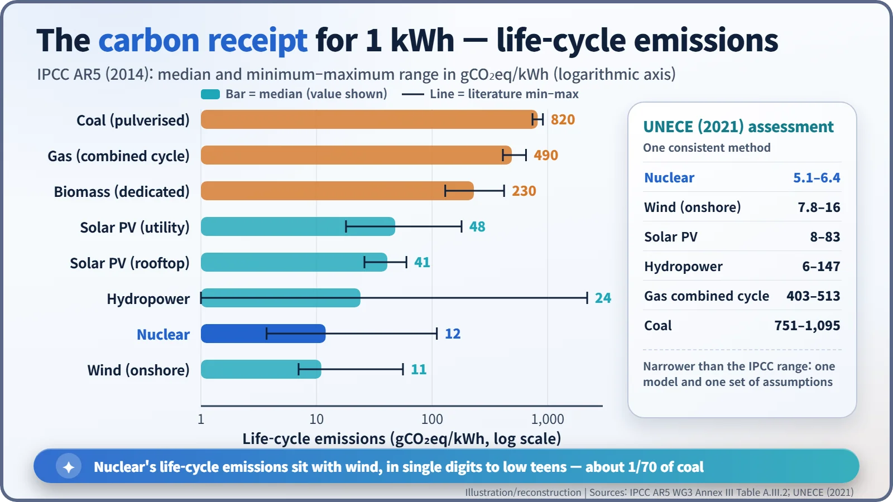
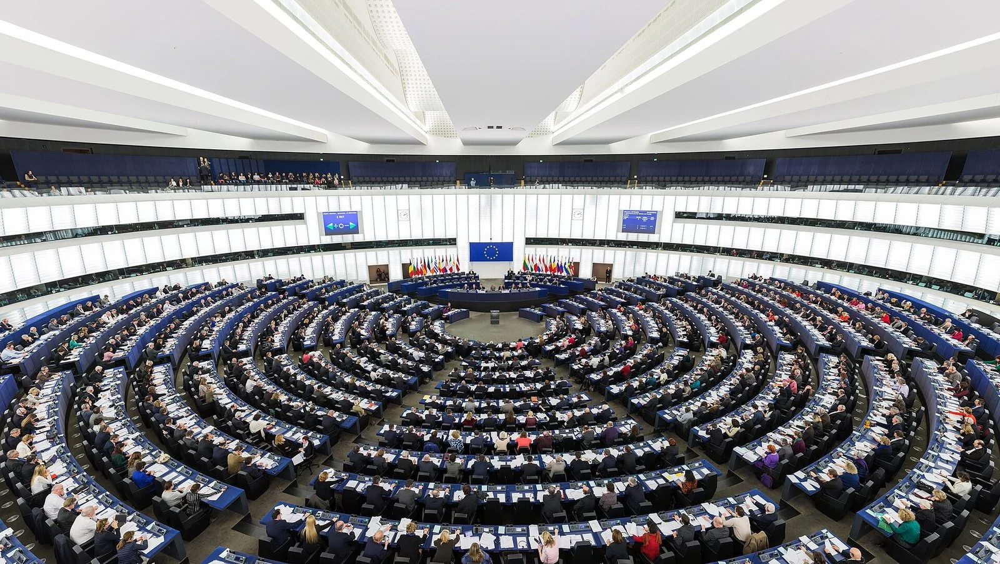
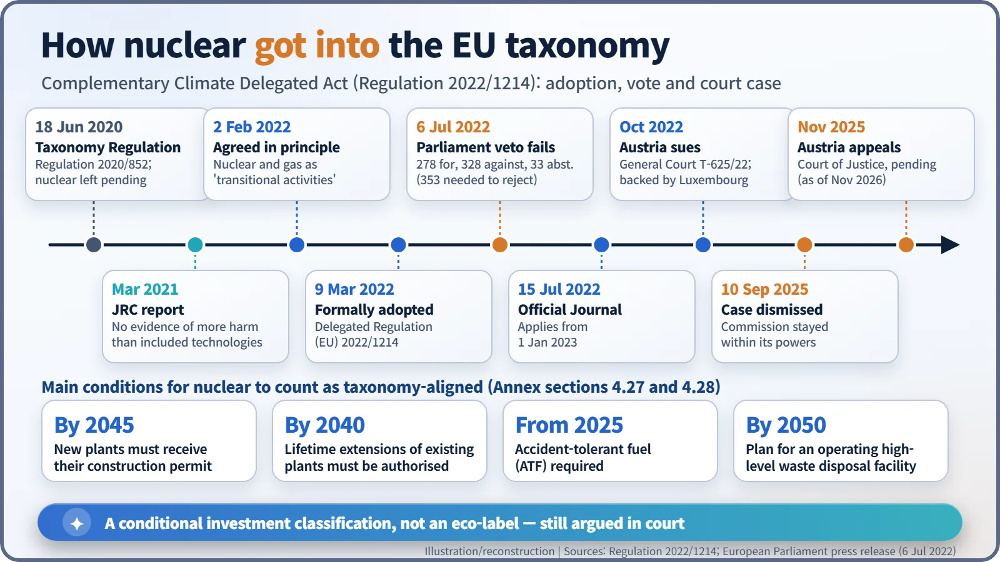
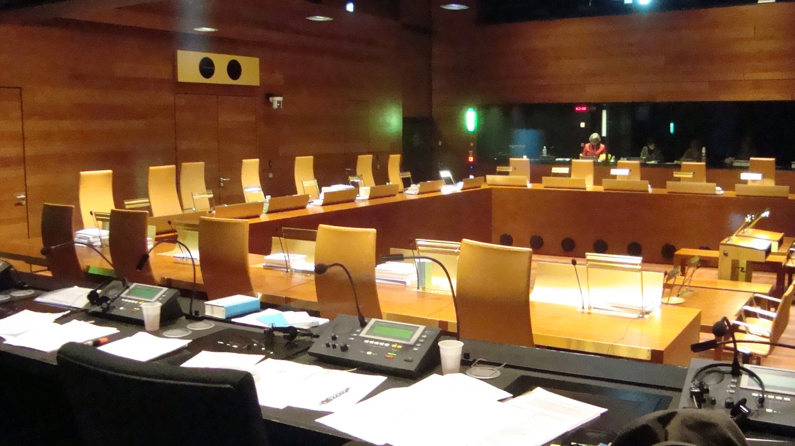

Nuclear History · 293
If Every Kilowatt-Hour Came With a Receipt — Nuclear Power, Climate Change, the IPCC and the EU Taxonomy
Life-cycle studies put nuclear at about 12 g of CO2 per kWh, but whether that makes it 'sustainable' became a vote in Strasbourg and a case in Luxembourg.
A reactor burns nothing while it runs, but an honest carbon count has to include mining, construction and waste. The IPCC's 2014 assessment put nuclear's median life-cycle emissions at about 12 g of CO₂-equivalent per kWh, close to wind, and a 2021 UNECE study found 5.1–6.4 g. Whether that makes nuclear "sustainable" was a different question: the EU answered it with conditions in 2022, and Austria took the answer to court.
A receipt for every kilowatt-hour
Imagine that every kilowatt-hour of electricity came with a till receipt. One line item: carbon dioxide, in grams per kWh. To be honest, the receipt cannot just list what leaves the chimney. It has to add up the emissions from mining the fuel, building the plant, running it, taking it apart at the end and managing the waste. Counting everything "from cradle to grave" like this is called life-cycle assessment (LCA).
A reactor burns nothing while it runs, so it emits almost no carbon dioxide directly. As climate change moved to the centre of international politics, that simple fact raised a new question in an old argument: is nuclear power a climate solution? This post follows how that question was handled, first in the numbers and then in the courts.
Who writes the receipt? The IPCC
The best-known author of this receipt is the Intergovernmental Panel on Climate Change (IPCC), set up in 1988 by the World Meteorological Organization and the UN Environment Programme. The IPCC does not run its own experiments; it assesses the published research. Its guiding principle is to be "policy-relevant but not policy-prescriptive". In other words, it does not tell countries to build reactors or to avoid them.
In 2014 the mitigation volume of the IPCC's Fifth Assessment Report (AR5) printed a table of life-cycle emissions by technology. The medians, in grams of CO₂-equivalent per kWh, were about 820 for coal, 490 for gas combined-cycle plants, 48 for utility-scale solar, 24 for hydropower, 12 for nuclear and 11 for onshore wind. Nuclear came out at roughly one-seventieth of coal, in the same league as wind. [1]

Why the range matters
A good receipt also shows the range. For nuclear, AR5 listed anything from 3.7 to 110 g. Studies made different assumptions about how the uranium was enriched (the power-hungry gaseous diffusion method or the far more efficient centrifuge) and about the grade of the ore. Most of nuclear's footprint comes from that front end of mining, milling and enrichment, not from the power station itself.
In October 2021 the UN Economic Commission for Europe (UNECE) recalculated the numbers with a single model and one consistent set of assumptions. Nuclear came out at 5.1–6.4 g, in the lowest group alongside onshore wind (7.8–16 g) and solar PV (8–83 g). Using one method narrowed the range sharply. [2]
"Low-carbon" and "sustainable" are different questions
So does the number settle it? The European Union went a step further. Its Taxonomy Regulation, adopted on 18 June 2020, is a kind of classification list that says which economic activities count as "environmentally sustainable investments". The test is strict. An activity must contribute substantially to climate mitigation and must also "do no significant harm" (DNSH) to other environmental goals such as water, biodiversity and pollution control.
Nuclear stalled at the second hurdle. The EU's Technical Expert Group accepted its contribution to cutting emissions, but held back from including it because it was hard to show that radioactive waste would cause no significant harm. In March 2021 the Commission's Joint Research Centre (JRC) concluded that there was no science-based evidence that nuclear power does more harm to health or the environment than electricity technologies already in the taxonomy. Another advisory body, the Scientific Committee on Health, Environmental and Emerging Risks (SCHEER), criticised parts of that approach. [5]
The veto that wasn't
On 2 February 2022 the European Commission agreed in principle to add certain nuclear and gas activities as conditional "transitional activities" in a Complementary Climate Delegated Act. It formally adopted the text on 9 March 2022 as Delegated Regulation (EU) 2022/1214. Member states split. France led the supporters, joined by countries including Czechia, Finland and Poland, while Austria, Luxembourg, Spain and Denmark opposed including nuclear. [3] [5]

On 6 July 2022 the European Parliament in Strasbourg had its chance to block the act. An objection received 278 votes in favour, 328 against and 33 abstentions, far short of the absolute majority of 353 needed. Strictly speaking, Parliament did not vote "for" nuclear; a motion to reject the act failed. The regulation appeared in the Official Journal on 15 July 2022 and has applied since 1 January 2023. [4]
The conditions are detailed. New plants must receive their construction permit by 2045, and lifetime extensions of existing plants must be authorised by 2040. Plants must use accident-tolerant fuel from 2025, and there must be a documented, detailed plan to have a high-level radioactive waste disposal facility in operation by 2050. [3]

The list goes to court
In October 2022 Austria asked the EU General Court to annul the act (case T-625/22), with Luxembourg supporting it. On 10 September 2025 the General Court dismissed the case, finding that the Commission had not exceeded its powers and was entitled to conclude that, under certain conditions, nuclear and gas activities can contribute substantially to climate mitigation. Some reports called it a ruling of the EU's "top court", but it came from the General Court. Austria's government, which maintains that nuclear power does not meet the criteria for environmental sustainability, appealed to the Court of Justice in November 2025. As of November 2026 no final ruling on the appeal had been reported. [6] [7]

Same receipt, different verdicts
Set the arguments side by side. Supporters of inclusion pointed to life-cycle emissions as low as wind's, to steady output regardless of the weather, and to the JRC assessment. Opponents pointed to the fact that most countries still have no operating repository for high-level waste, to accident risk, and to long construction times and high costs. The EU's own Platform on Sustainable Finance also questioned whether plants licensed as late as 2045 could contribute in time to the 2050 climate-neutrality goal. [5]
What the story shows is that two different questions are being asked. "Is nuclear power low-carbon?" The receipt answers that fairly clearly. "Is it sustainable?" That depends on how a society weighs waste, risk and cost, and different societies looking at the same numbers are still reaching different answers.